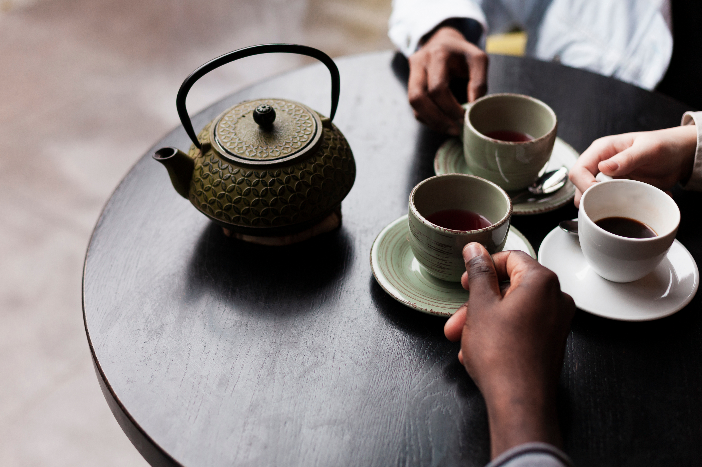
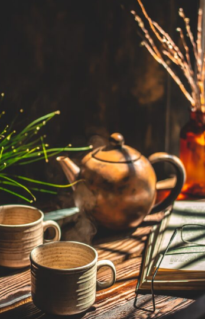
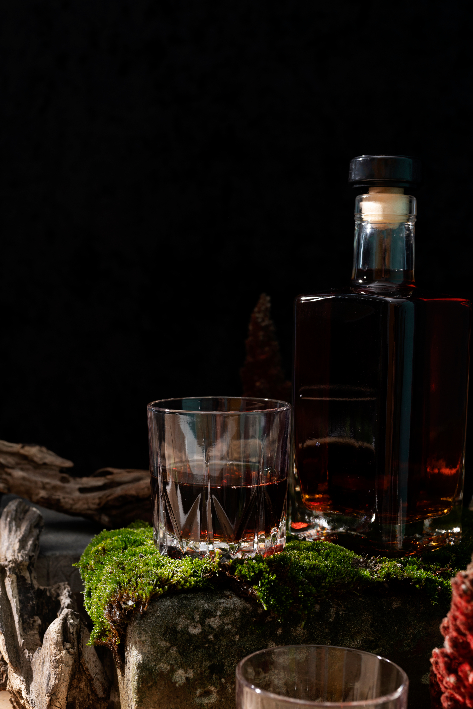
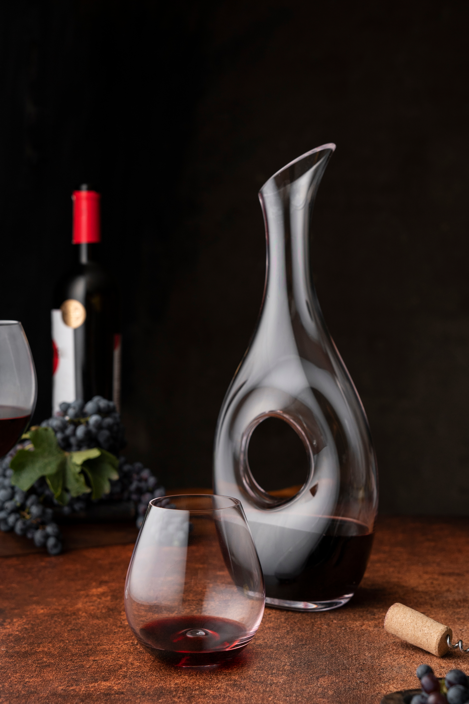
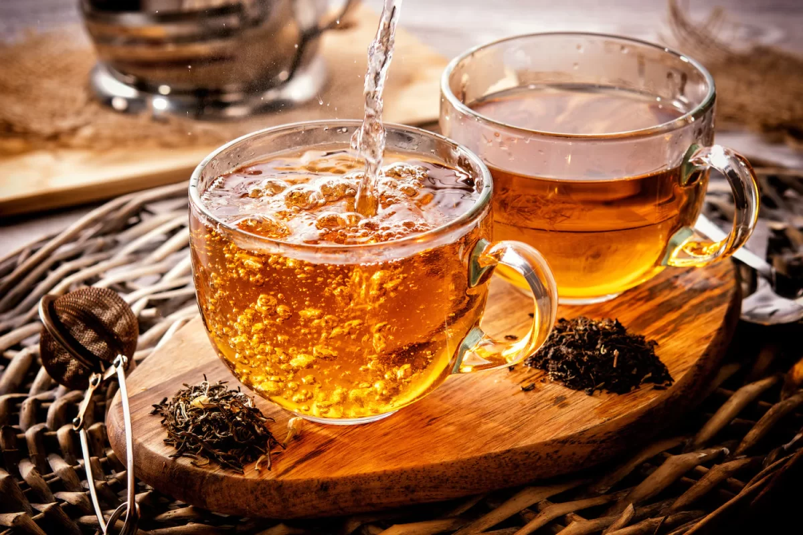
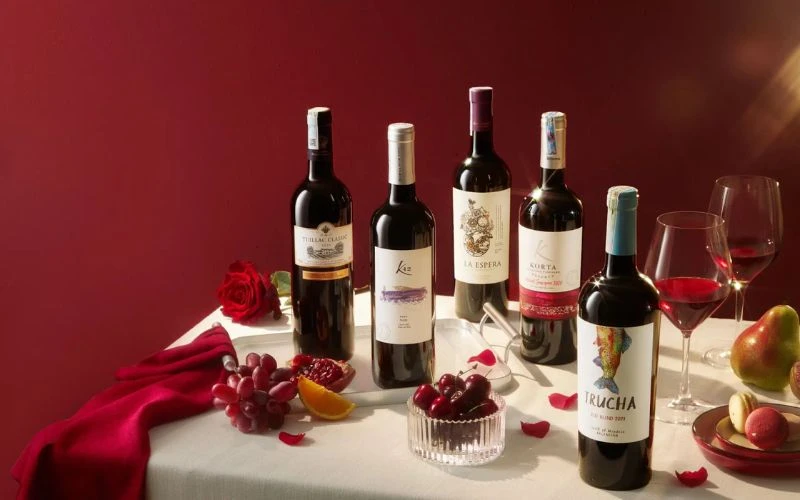
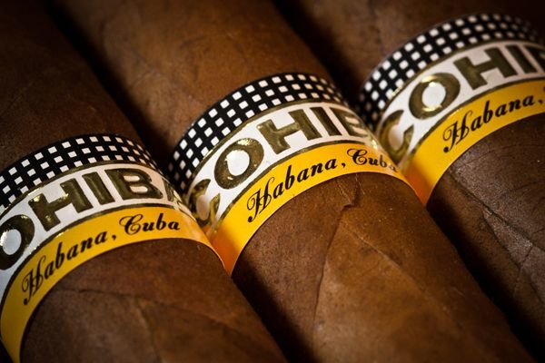

Tinh hoa trong
trải nghiệm sống
NHATO tin rằng phong vị sống là sự phản chiếu của cá tính và cảm xúc. Chúng tôi đồng hành cùng bạn kiến tạo nên một lối sống tinh tế, hài hòa và đầy cảm hứng
nghệ thuật thường thức
Không chỉ là thưởng thức,
mà là cách cảm nhận trọn vẹn
Mỗi phong vị đều có một cách để cảm nhận trọn vẹn. Từ không gian, nghi thức, đến cảm nhận và sự kết nối - tất cả tạo nên một trải nghiệm đang nhớ
Không gian
Nơi thường thức tạo nên cảm xúc.ánh sáng, âm thanh, chất liệu và những đồng hành đều góp phần tạo nên trải nghiệm đáng nhớ
nghi thức
Từ cách pha trà, mở chai vang, rót rượu đến cách chuẩn bị một điếu cigar - mỗi hành động đều có tinh nghi thức riêng
cảm nhận
Hượng, vị, nhiệt độ, kết cấu và dư vị. Học cách cảm nhận để hiểu được điều làm nên sự khác biệt
kết nối
Phong vị trở nên đặc biệt hơn khi được chia sẻ. Một tách trà, ly vang hay điếu cigar có thể mở ra những cuộc trò chuyện ý nghĩa

TràTrà là một nét văn hóa lâu đời, mộc mạc và gắn liền với đời sống người Việt CigarNghệ thuật thường thức, khám phá thế giới cigar, từ nguồn gốc đến nghệ thuật
Rượu MạnhRượu mạnh là kết tinh của kỹ thuật chưng cất bậc thầy và thời gian ủ lâu năm
Rượu VangKhông chỉ là một thức uống, mỗi chai vang mang trong mình một cá tính riêngBài viết khác
tất cả bài viết
Hương vị rượu vang và các tầng hương vị đặc trưngRượu vang luôn là thức uống được nhiều người yêu thích không chỉ vì sự sang trọng, mà còn bởi sự đa dạng và tinh tế trong hương vị. Nhưng hương vị rượu vang thực sự là gì?
Giống cây thuốc lá làm xì gà: Bí quyết tạo nên điếu xì gà ngonThuốc lá Habanensis là sản phẩm từ cây Tobaco negro cubano (Cigar đen Cuba). Đây là giống cây truyền thống, cao khoảng 160-180cm
Bí mật của Trà Đen: Hương vị quyến rũ chinh phục cả thế giớiTrà đen được biết đến một biểu tượng của văn hóa châu Âu. Vậy, điều gì khiến trà đen thống trị nền ẩm thực châu Âu?